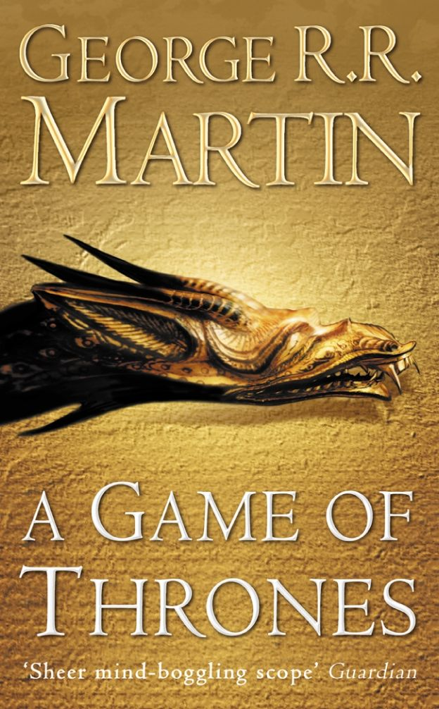

A Game Of Thrones (Book 1)
Synopsis
Long ago, in a time forgotten, a preternatural event threw the seasons out of balance. In a land where summers can last decades and winters a lifetime, trouble is brewing. The cold is returning, and in the frozen wastes to the north of Winterfell, sinister forces are massing beyond the kingdom’s protective Wall. To the south, the king’s powers are failing—his most trusted adviser dead under mysterious circumstances and his enemies emerging from the shadows of the throne. At the center of the conflict lie the Starks of Winterfell, a family as harsh and unyielding as the frozen land they were born to. Now Lord Eddard Stark is reluctantly summoned to serve as the king’s new Hand, an appointment that threatens to sunder not only his family but the kingdom itself.
Download PDF